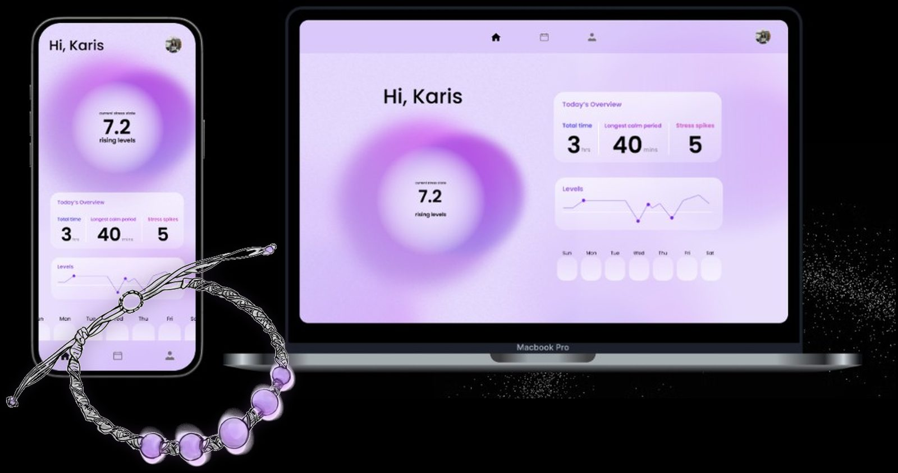
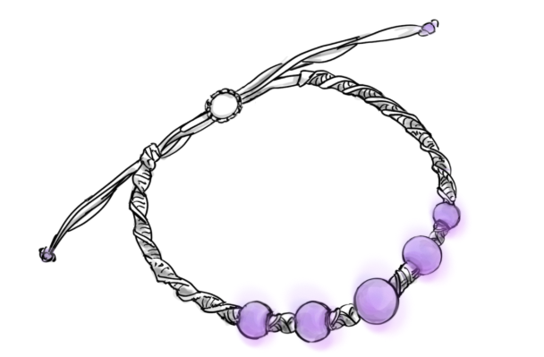

Oizys is a stress bracelet I designed and built with Karis for 49-313 Designing for the Internet of Things (Fall 2025). Nearly half of U.S. adults say stress has negatively affected their behavior, and long-term stress is easy to miss — especially in competitive environments where being constantly on edge starts to feel normal.
Smartwatches already dump heart-rate data on you. That is often bulky, flashy, and more numbers than anyone asked for. We wanted the opposite: an ambient accessory that looks like jewelry and only nudges you when stress is actually present.
Stress starts from internal and external pressure. In cutthroat settings it gets treated as the default, so people stop noticing it. Symptoms show up as fatigue, irritability, or muscle tension — easy to ignore, expensive over time.
Existing wearables tend to add cognitive load. More charts, more choice, sometimes more stress. Oizys is a nudge, not a dashboard on your wrist.
Semi-transparent beads with embedded LEDs, a heart-rate sensor, a motion sensor, macrame cord to hide wiring, an adjustable knot, and a Wi-Fi microcontroller. Elevated heart rate with little to no movement reads as stress: the beads glow red. Otherwise they stay green.

Heart rate alone is a noisy signal — exercise looks a lot like stress. Pairing it with motion cuts false positives. (Heart-rate variability is a well-studied stress marker; we used heart rate plus stillness as a prototype stand-in.)
Motion from an ADXL335 accelerometer.
Heart rate from a MAX30102 sensor.
If heart rate is high and motion is low, the bracelet lights red and the companion app marks
Stressed. Otherwise it lights green.
Data flows ESP32 → Wi-Fi → a small backend (sensor API) → a React app that shows stress level and duration, without asking the wearer to log anything.
Plenty of people dislike smartwatches because they look technical. Oizys borrows the shape of something people already wear: a beaded bracelet. No on-device interface — the wearable is enchanted, not a tiny screen. The glow is meant to be glanceable, not a notification stack.
The first heart-rate sensor would not calibrate reliably — we swapped hardware and changed how BPM was calculated. An oversized remote power supply shorted parts of the circuit; we added a transistor and worked with course staff to debug the chip. The prototype housing is still larger than a finished piece of jewelry: the sensors do not yet hide cleanly inside the beads.
Next: HRV against a personal baseline (the app currently tracks BPM, not long-term variability), plus a smaller, sleeker build.
ESP32 · ADXL335 · MAX30102 · LED strip / bead LEDs · Python backend (localhost API) · React companion app